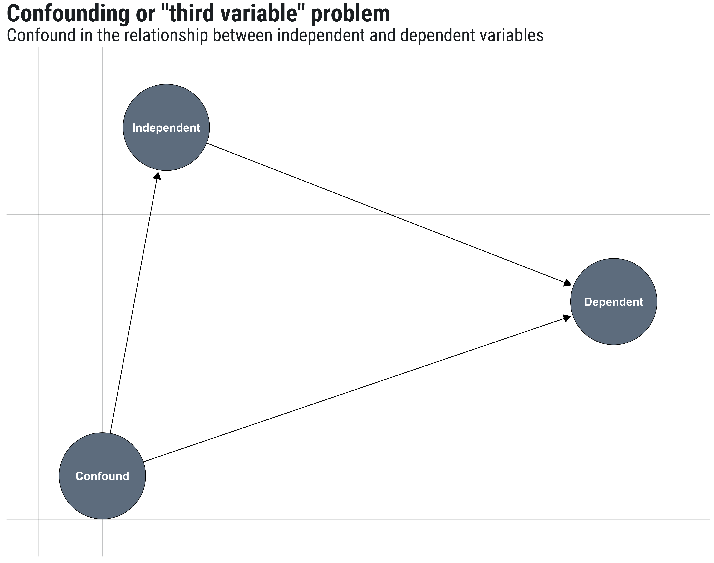
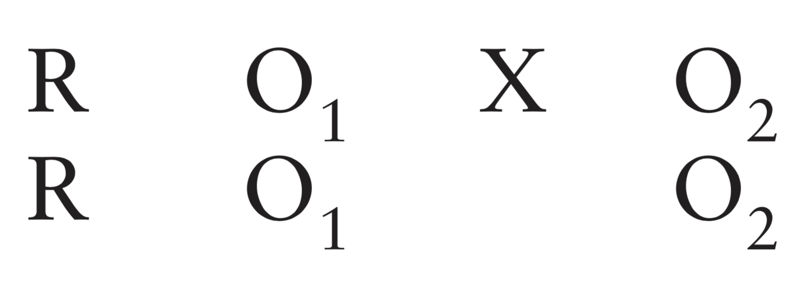
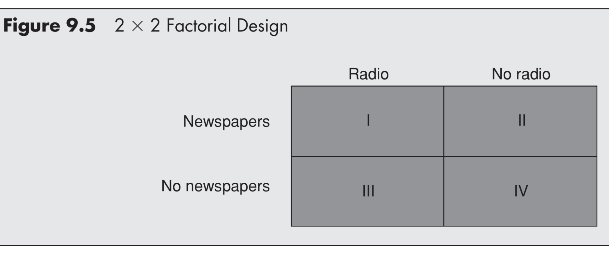
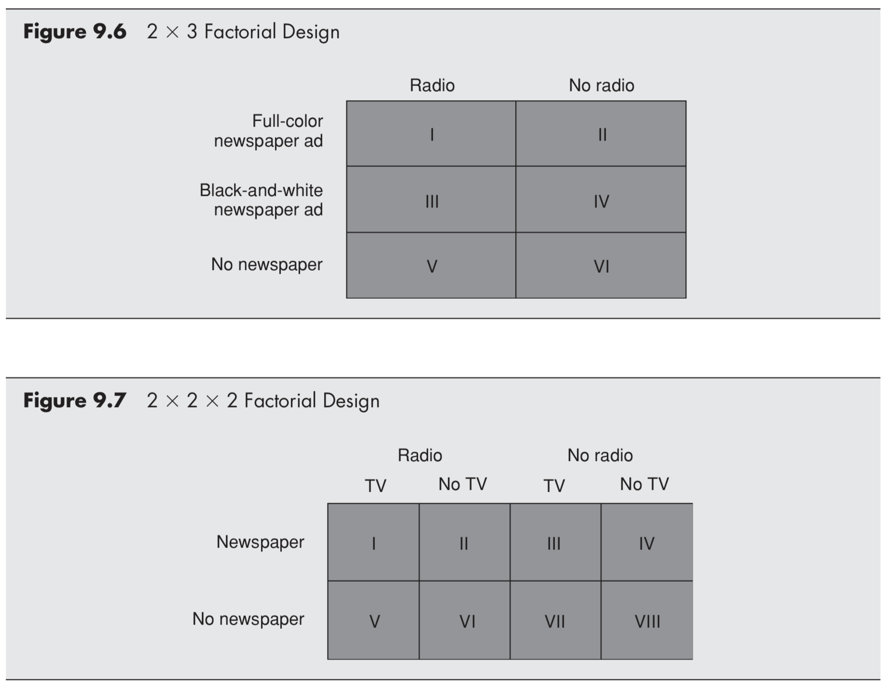
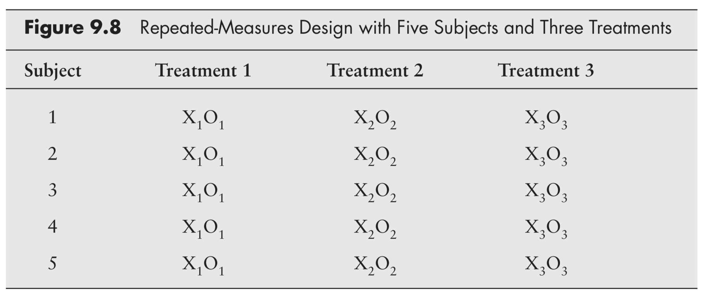
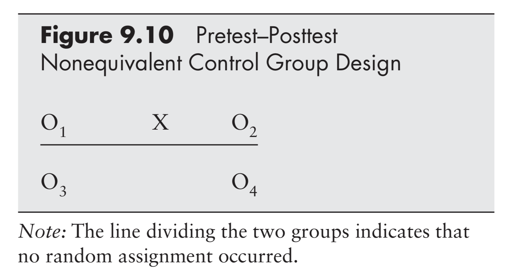

School of Journalism
Informatics Institute
University of Missouri
Recap and overview
Surveys
Last week’s talk by Dr. Ben “Jumpshot” Warner from Communication Department
Why use surveys?
Why not?
Overview
Background concepts
Experimental research
Experimental designs
Pre-test / post-test
Control/comparison
Factorial
Quasi/field
Background concepts
Reliability and validity
Reliability = consistency
Approximate this with statistics
Validity = accuracy
Internal: soundness of study design
External: generalizability
Representative sample
Ecologically valid
Confounding variables
Confounding variables are unintended forces that are responsible for variation

Dealing with confounds
Two ways to control for confounding variables
Randomization (random sample/assignment)
Incorporate the confound into study design (measure/control)
Experimental research
What is an experiment?
What makes something an experiment?
Why do an experiment?
When would an experiment be better than a survey?
When would a survey be better than an experiment?
Advantages of lab experiments
Evidence of causality
Control
Cost
Replication
Disadvantages of lab experiments
Artificiality
Researcher bias
Limited scope
Experimental research
Select setting
Select experimental design
Operationalize variables
Decide how to manipulate independent variable
Select and assign subjects to experimental conditions
Conduct a pilot study / manipulation check
Administer the experiment
Analyze and interpret the results
Experimental designs
Defining features
There are two defining features of experimental designs
When the measurement occurs
How the groups are determined
Pre-test/post-test
One classic experimental design involves a pre-test and a post-test 
Allows measurement of change within subjects
Allows control over variations in starting points
Post-test only
An increasingly common measurement design is to only conduct a post-test
Less expensive
Avoids re-measurement confound
Solomon 4-group
Control/comparison
Experiments must include two or more groups
When a comparison is made against the absence of something, we call that group the control group
When a comparison is made between two different types of something, we call them comparison groups
Factorial designs
For more complex designs, groups are often exposed to multiple different experimental manipulations
This is called a factorial design because it makes more sense to think about the groups in relation to factors rather than as each their unique group 

Repeated measures

Quasi-experimental designs
Conduct an experiment without perfect random assignment
Pre/post nonequiv control

Field experiments
Sacrifice internal validity for external validity
Can be expensive and difficult to administer ethically
Online survey experiments
Experiments are increasingly being conducted on line (the internet is beautiful)
Survey experiments and cheap and easy, but can suffer from poor ecological validity and respondent recall/attention
A/B testing
Same principles with some different technical implementation details
Outcome variables are impressions, engagements, clicks, buys, shares, revisits, etc.